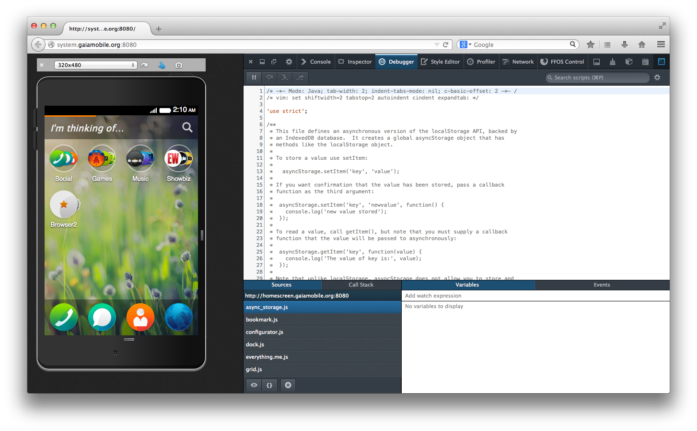

name: inverse layout: true class: center, middle, inverse --- #Firefox OS inside out [Yuren Ju] --- layout: false .left-column[ ## Yuren Ju ] .right-column[ - KaLUG: 2005 ~ 2008 - Hacking Thursday: 2008 ~ present - COSCUP: 2009 ~ 2012 (記錄組、議程組) - Mozilla Corporation: 2012 ~ present ] --- class: center, middle, inverse # Firefox Browser -> Firefox OS --- class: center, middle, inverse # Firefox OS --- class: center, middle --- class: center, middle --- class: inverse .left-column[ # Gaia ] --- class: inverse .left-column[ # Gaia ] .right-column[ 蓋亞是最早的神。開天闢地之時，她由混沌（Χάος）中誕生。她是天空之神烏拉諾斯的母親，而後與他結合生下十二個泰坦、三個獨眼巨人、三個百臂巨人。她是世界的開始，所有天神都是她的後代，宙斯是她的孫子。 Photo Credit: [Lost Gardens of Heligan](http://www.flickr.com/photos/26254609@N00/203759604/) ] --- class: inverse, center, middle ## What tools do we need for developing an OS? Photo Credit: [Welding](http://www.flickr.com/photos/63004985@N08/5884018376) --- class: center, middle --- class: center, inverse, middle ## .red[Problem:] We don't have any device for developing --- class: center, middle Samsung Galaxy SII --- class: center, middle But... --- class: center, inverse, middle ## Shared Infrastructure with Android and replace them piece by piece... --- class: center, middle, inverse <img src="images/android-architecture.jpg" /> --- class: center, middle <img src="images/firefoxos-architecture.jpg" style="width: 70%;" /> --- class: center, middle, inverse ## Device/Simulator/Browser <img src="images/blueprint.jpg" style="width: 45%;" /> Photo Credit: [iPhone: Blueprint](http://www.flickr.com/photos/sometoast/1405380577/) --- class: center, middle, inverse # console.log/printf --- class: inverse ## How do we test/debug on device? --- class: inverse ## How do we test/debug on device? <br /><br /> ```shell # modify source code make install-gaia ... generating profile ... install profile into device # repeat... ``` --- class: center, middle, inverse --- class: center, middle, inverse # .red[r2d2b2g]: Firefox OS Simulator <img src="images/r2d2.png" /> --- class: center, middle <img src="images/r2d2b2g.png" width="100%" /> --- class: middle, inverse ```shell # modify source code make install-gaia ... generating profile ... install profile into device # repeat... ``` --- class: middle, inverse, center # DEBUG=1 ```shell DEBUG=1 make ``` 2012 Apr. --- class: middle, center  --- class: middle, center, inverse # Debugging --- class: middle, center, inverse # Breakpoint <img src="images/breakpoint.png" width="100%" /> --- class: middle, center, inverse # CSS modification in rumtime --- class: inverse, middle, center ## Remote Debugger (App Manager) Photo Credit: [Photo by Mary Crandall](http://www.flickr.com/photos/57340921@N03/6717597019) 2013 Oct. --- class: inverse, center, middle <iframe width="750" height="600" src="//www.youtube.com/embed/z1Bxg1UJVf0" frameborder="0" allowfullscreen></iframe> --- class: inverse, center, middle # Unit Testing --- class: center, middle # Mocha + Chai + Test Agent --- class: inverse, center, middle ## We have some unit tests, but always failed --- class: inverse, center, middle # Continues Integration  Travis-CI 2012 Nov. --- class: inverse, center, middle ## Pull Request -> Review -> Modify -> Land ### Pull Request -> .red[Automatic testing] -> Review -> Modify -> Land --- class: inverse, center, middle --- class: inverse, center, middle # Integration Test 2013 Sep. --- class: inverse, center, middle <iframe width="640" height="360" src="//www.youtube.com/embed/dJ9C6CwufUE" frameborder="0" allowfullscreen></iframe> --- class: center, middle --- class: inverse, center, middle # Future --- class: center, middle, inverse # Thank You